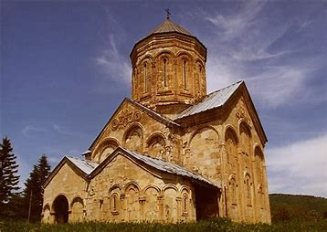

get to know georgia
ნიკორწმინდა — გუმბათოვანი ტაძარი ამბროლაურის მუნიციპალიტეტის ამავე სახელწოდების სოფელში. X საუკუნის ბოლოს რაჭის საერისთავოს შექმნის შემდეგ, ერთიანი ფეოდალური საქართველოს პირველი მეფის ბაგრატ III-ის ბრძანებით საძირკველი ჩაეყარა წმინდა ნიკოლოზის სახელობის დიდი ტაძრის მშენებლობას, რომელიც ამ საერისთავოს კულტურულ ცენტრად იქცა.

ნიკორწმინდის ტაძარი ეროვნული ხუროთმოძღვრების შედევრია. აგებულია XI საუკუნის დასაწყისში, 1010-1014 წლებში. ეს ის პერიოდია, როცა დიდი ყურადღება ექცეოდა ფასადების დეკორაციულ გაფორმებას. სწორედ ამ მხრივ ნიკორწმინდის დეკორი ქართული მონუმენტური პლასტიკის მიღწევაა. ძეგლს არსებობის განმავლობაში დიდი ცვლილებები არ განუცდია. ეს კი იშვიათი შემთხვევაა. ტაძრის გუმბათი პირვანდელი სახითაა შემორჩენილი. XVI საუკუნეში იმერეთის მეფის, ბაგრატ III-ის ხელშეწყობით ნიკორწმინდა განაახლეს. ამ ფაქტის დამადასტურებელია 1534 წელს მეფის მიერ ტაძრისათვის ბოძებული
აქედან მოყოლებული, ნიკორწმინდა რაჭის საეპისკოპოსო ტაძრად მოიხსენიება. ნიკორწმინდის შესახებ ბევრი ისტორიკოსი თუ მოგზაური წერდა. XVIII საუკუნეში ტაძარი დაუთვალიერებიათ რუს ელჩებს, ტოლოჩანოვსა და იევლევს: „გავემგზავრეთ ალექსანდრე მეფის რაჭაში... ეკლესია ქვისაა, დიდი, საქმედ საკვირველი, ნიკოლოზ საკვირველმოქმედის სახელზე... ეკლესიის ახლოს არის ქვის გალავანი ორი კარით. იმავე ეკლესიაში დასაფლავებული არიან მეფის მახლობელი ნათესავები... აკლდამები გამართულია ეკლესიის კედლებში“. ელჩების ჩანაწერებში მოხსენიებულია ეკლესიის გალავანი, რომელიც დღესდღეობით მორღვეულია, მხოლოდ მისი ნაშთებია შემორჩენილი. ხოლო რაც შეეხება მეფის ახლობელთა აკლდამებს, ისინი ძეგლის განახლებისას გადაუფარავთ.
ტაძარში არსებული რთული მხატვრობა XVI-XVII საუკუნეებით თარიღდება და გამოკვეთილია მხატვრობის ორი ფენა. მრავლადაა საერო პირთა პორტრეტები, რომელთაც თან ახლავს წარწერები. ვარკვევთ, რომ ნიკორწმინდა გვიანშუასაუკუნეებში ადგილობრივი თავადების, წულუკიძეთა საძვალეს წარმოადგენდა. ბარელიეფის ოვალურ მხარეს მოთავსებულია ლამაზად ამოკვეთილი წარწერა, რომლის ავტორიც ლოცავს გაერთიანებული საქართველოს მეფეს ბაგრატ III-სა და მის მემკვიდრეს:
„ქრისტე, ძეო ღმრთისაო, ადიდე სიმრთელით დღეგრძელობით შენ მიერ გვირგვინოსანი ბაგრატ აფხაზთა და რანთა მეფე და ქართველთა კურაპალატი და გაზარდე ძე მათი გიორგი ნებასა შენსა და მეოხებითა წმიდისა მღვდელმთავრისა ნიკოლოზისათა.“
წარწერა ადასტურებს ტაძრის აგების თარიღს, კერძოდ, ბაგრატ მეფემ რანი დაახლოებით 1010-1014 წლებში აიღო და სწორედ ამ პერიოდშია ნიკორწმინდა აგებული.
ეკლესიის დასავლეთ კედელზე, სარკმლის მარჯვნივ, მოხსენიებულია ტაძრის მოძღვარი გიორგი: „წმიდაო ნიკოლოზ, შეიწყალე გიორგი მოძღუარი ამის წმიდისაი ეკლესიისაი“. XI-XIII საუკუნეებში ნიკორწმინდა რაჭის ერისთავ კახაბერიძეთა საგვარეულო მონასტერს წარმოადგენდა, რაც დასტურდება ტაძარში არსებული რამდენიმე წარწერით: „მე კახაბერ... ძემან... ერისთავთერისთავისა რატისმან მოვჭედე ხატი ესე ჯუარცუმისაი... სადღეგრძელებლად ძისა ჩემისა ერისთავთ ერისთავისა, რაჭის ერისთავის რატისად“.
XIII საუკუნის 80-იან წლებში დასავლეთ საქართველოს მეფემ, დავით VI ნარინმა ღალატის ბრალდებით კახაბერიძეთა დინასტია ამოწყვიტა. სწორედ ეს იყო მიზეზი იმისა, რომ ნიკორწმინდამ დაკარგა მფარველი და იგი საგრძნობლად დასუსტდა. XVI საუკუნის 30-იან წლებში იმერეთის მეფემ ბაგრატ III-მ გამოიჩინა მზრუნველობა და განაახლა ტაძარი. ხატწერისა და მხატვრობის მეორე ფენა ეკუთვნის XVII საუკუნეს. როგორც სურათებიდან ვასკვნით, იგი მოხატული უნდა იყოს წულუკიძეთა ფეოდალური გვარის მიერ ამავე საუკუნის მეორე ნახევარში.
2007 წლის 24 ოქტომბრიდან ნიკორწმინდის მონასტერი შეტანილია იუნესკოს მსოფლიო მემკვიდრეობის საცდელ სიაში.[1] 2012 წელს სარეაბილიტაციო სამუშაოებისას ჭვარტლით დაფარულ კარიბჭეებში აღმოჩნდა XVI საუკუნის მანამდე უცნობი ფრესკები: ტაძრის ქტიტორთა, ადგილობრივ ფეოდალთა და მთავარანგელოზ მიქაელის გამოსახულებები. ერთ-ერთი ფრესკული წარწერა იხსენიებს ტაძრის მომხატველს, ვინმე ჯავახაძეს. ქტიტორთა გამოსახულებებთან მოხსენიებულია ორი გვარი, ჯავახაძეები და წულუკიძეები.[2]